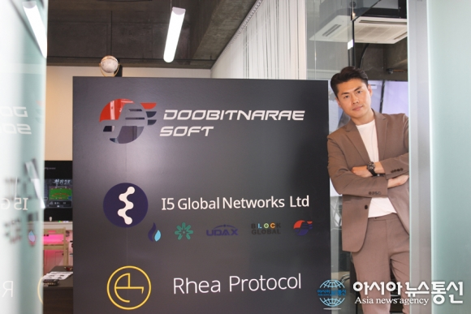

|
QR코드 통합 플랫폼으로 가상자산의 새 시대를 연다 2020. 06. 10 |
|---|
|
 두빛나래소프트 박대용 대표 이제 디지털 화폐는 법정 화폐보다 더 많이 사용하는 시대가 됐다. 전 세계를 깜짝 놀라게 한 코로나19 바이러스는 이러한 흐름을 더욱 부추기고 있다. 역사상 유례가 없는 전염병이 창궐하면서 비대면 결제가 주목받았고, 사람들은 간편 결제를 찾기 시작했다. 현재 가장 즐겨 쓰는 결제 수단인 신용카드로 계산하려면 오프라인으로 나가야 하는데, 코로나19 등 다양한 이유로 현장을 가지 않고 내가 있는 곳에서 결제하는 것을 원하게 되었다. 핀테크 전문기업 ㈜두빛나래소프트(대표 박대용)는 가상자산을 기반으로 토스 같은 간편 송금 서비스를 제공하는 모바일 애플리케이션 ‘크립토뱅크’를 개발하면서 화제의 중심에 섰다. 가상자산을 조회, 관리, 송금, 결제할 수 있는 올인원 플랫폼으로 핀테크를 넘어 4차 산업혁명을 선도 중인 두빛나래소프트 박대용 대표를 만나 고견을 들었다.2014년 설립된 두빛나래소프트는 서울시 강남구 역삼동에 있는 핀테크 전문 기업이다. 이곳은 가상자산 버전 간편 송금 서비스 ‘토스’를 목표로 모바일 애플리케이션 크립토뱅크를 개발했다. 크립토뱅크는 다양한 가상자산 거래소 자산을 하나의 플랫폼으로 통합한 애플리케이션으로 여러 거래소에 분산된 가상자산을 쉽게 이체할 수 있는 것은 물론 실물경제에서도 결제에 사용할 수 있도록 만들어졌다. 또한, 크립토뱅크 플랫폼 안에 일반 소매점에서도 결제할 수 있어 가상자산 개발업체를 비롯해 가상자산 거래소들의 비상한 관심을 벌써 받고 있다. 두빛나래소프트는 조만간 크립토뱅크 베타버전 테스트를 마무리할 계획이며, 이후 가상자산 관리, 송금, 결제 기능 등을 아우르는 안드로이드 버전을 먼저 선보일 예정이다. 두빛나래소프트는 크립토뱅크의 더 빠른 상용화를 위하여 결제 기술 전문기업 티페이먼트와 특허․기술 지원 및 결제 시스템을 탑재하기 위한 업무 협약을 체결한 것은 물론 금융기관과도 결제 서비스 관련 MOU를 맺는 등 새로운 시장을 향해 빠르게 대처하고 있다. 금융기관과 협업하여 새 금융 솔루션 개발 “저희는 금융기관과 업무협약을 맺고 디지털화폐가 실질적으로 대한민국 곳곳의 가맹점에서 결제가 가능할 수 있도록 인프라, 기반, 기술개발 등을 협업하여 개발 중입니다. 왜냐하면 앞으로는 휴대폰 모바일로 대부분 결제가 이뤄지는 세상이 올 것이기 때문입니다. 플라스틱으로 만든 카드나 현금의 경우는 점점 더 약세를 보일 것입니다. 현재 모바일로 결제하기 위해선 별도의 디바이스가 필요합니다. 그런 결제 단말기를 구매할 수 있는 곳은 대형프랜차이즈 등 극히 제한적입니다. 소상공인을 비롯한 금융 소외 계층에서는 이런 장비를 쉽게 구비할 수 없습니다. 이제 대부분 사람은 스마트폰을 가지고 있고 가능하다면 스마트폰으로 결제를 하려고 하죠. 모든 스마트폰에는 카메라가 있기 때문에 QR코드를 통하면 별도의 비싼 디바이스 없이 손쉽게 결제가 가능합니다. 이렇게 되면 엄청 편리하겠죠.” 두빛나래소프트 박대용 대표는 기존 전통 금융권이 가진 포스시스템과 QR코드가 현재 결합이 안 된다는 점을 안타까워했다. 실제로 디지털화폐의 저변이 확대되기 위해서는 기존 전통 금융 시스템에 같이 녹아들어야 하기 때문이다. “우리나라는 하나의 포스시스템 안에서 신용카드 하나만 있으면 단말기들을 따로 구비할 필요 없이 모든 결제를 할 수 있습니다. 그런데 디지털화폐는 아직 그런 시스템이 구축되어 있지 않습니다. 카카오 페이, 네이버 페이 등은 각각 QR코드가 분류되어 있지만 통합이 되어 있지 않습니다.” 이를 통합할 수 있는 QR코드 밴 분류 시스템을 두빛나래소프트는 개발했다. 밴 분류 시스템에 대한 기술력과 특허를 보유하고 있기 때문에 박대용 대표는 이 기술력을 기반으로 금융기관과 협업에 온 정성을 다하고 있다. 그 협업을 통해 혁신 금융 솔루션으로 세상을 깜짝 놀라게 하고 싶다는 계획을 밝혔다. 크립토뱅크는 전 세계 가상자산거래소 및 가상자산 지갑을 하나의 플랫폼에서 송금, 이체, 결제, 수탁, 기부 등을 제공하는 가상화폐 중앙은행 역할을 한다. 즉, 크립토뱅크는 하나의 중앙은행으로써 발신인과 수신인을 명확하게 확인할 수 있어 호평을 받고 있다. “지금까지 가상자산 같은 경우에는 하나의 애플리케이션 안에서 송금 및 이체 등 다양한 서비스를 지원해줄 수 있는 시스템이 전무했습니다. 그리하여 전 세계에 약 4천여 개에 달하는 거래소가 존재하게 됐습니다. 이 거래소가 개별적으로 자산을 관리하고 송금 및 이체하다 보니 전통 금융이 가장 중요시하는 금융에 대한 정확한 거래 추적이 불가능했습니다. 최근 이슈가 됐던 N번방 사건 등에서 나타났듯이 가상자산이 불법적인 일에 쓰였던 이유입니다. 크립토뱅크는 이러한 문제를 깔끔하게 정리한 하나의 중앙은행이라고 보면 됩니다. 모든 거래소를 크립토뱅크에서 관리하는 것입니다. 모든 거래를 크립토뱅크 안에서 하게 하면 정확하게 발신인과 수신인이 나올 것이며, 신원증명이 될 것입니다. 따라서 어떤 용도로 가상자산을 주고받았는지를 분명하게 알 수 있고 이를 증명할 수 있습니다.” 크립토뱅크는 몇 번의 클릭을 통해 쉬운 이체가 가능할 뿐만 아니라 가상자산을 크립토뱅크 수탁 계좌로 사용할 만큼만 예치하면 대원포스, 찬율, 페이크럭스 등 전국 가맹점에서 결제도 할 수 있다. 이러한 편의성과 함께 크립토뱅크는 거래소 API(Application Programming Interface) 사용자와 크립토뱅크 사용자가 동일한지 확인하는 서비스도 갖추고 있으며, 사용자들을 정확하게 확인할 수 있어 자금 세탁을 비롯한 불법적인 일에 쓰일 우려가 전혀 없다. 크립토뱅크가 여타 플랫폼과 차별화되는 대목이다. 저변을 확대하여 실물경제에 적용돼야 “소비자가 실물경제에서 가상자산의 효용성을 느껴야 기술 확장에도 속도가 붙는 법입니다. 저희가 대원포스, 찬율, 페이크럭스 등 전국 가맹점을 대상으로 포스 기기를 보급하는 등 저변을 넓히고 있는 것도 이와 같은 이유에서입니다. 저희가 말하는 핀테크는 새로운 것을 말하는 게 아닙니다. 전통적인 금융 시스템과 결합할 수 있는 핀테크가 중요합니다. 전통적 금융이 지닌 기술과 새 기술이 더해진 핀테크 시스템이라면 현재 결제, 송금이체 등 불편하게 쓰이는 것들을 조금 더 실물경제에 빨리 끌어올 수 있다고 생각합니다. 그것을 두빛나래소프트가 해내는 것이 목표입니다.” 크립토뱅크는 여기서 더 나아가 월드비전과도 협업해 가상자산을 기부할 수 있는 모델 역시 개발 중이다. 즉, 결제부터 기부까지 아우르는 디지털 플랫폼 모델로 크립토뱅크를 키워나가 국경을 뛰어넘는 핀테크 전문기업으로 자리매김할 것이라고 박대용 대표는 청사진을 밝혔다. 두빛나래소프트는 ‘두 개의 빛나는 날개’라는 의미를 지닌 순우리말이다. 더욱 한국적인 기술과 비전으로 전 세계를 빛내고 싶다는 두빛나래소프트 박대용 대표의 소망이 빨리 이뤄지기를 기대해본다.
|
| 출처 : 아시아뉴스통신 (http://www.anewsa.com/) |
| 기사 보러가기 → |
| 목록 |
Society for worldwide Exchange Payment and Transfer